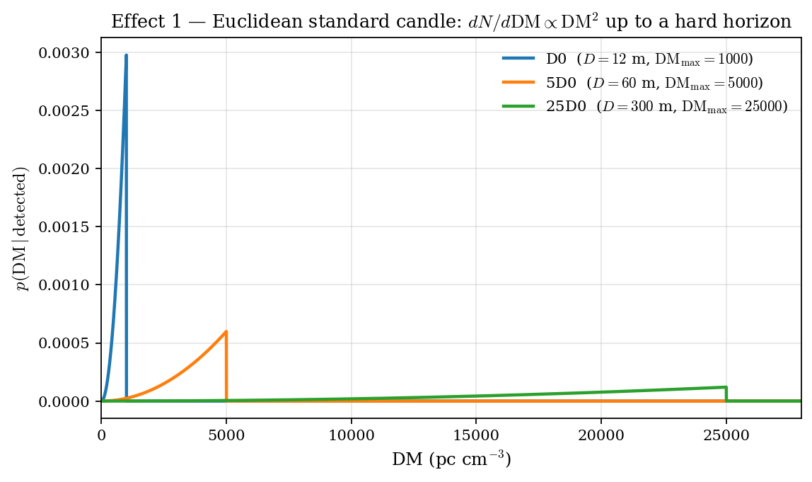
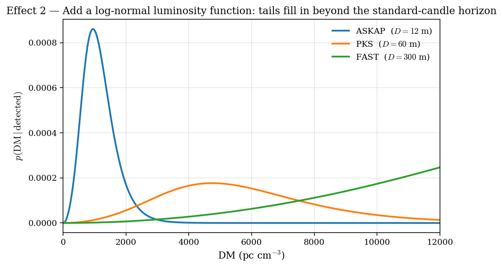
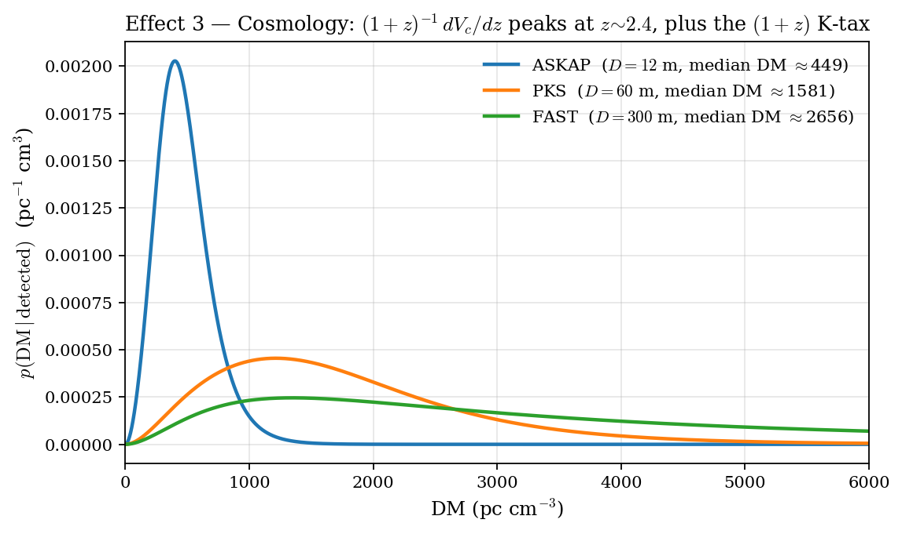
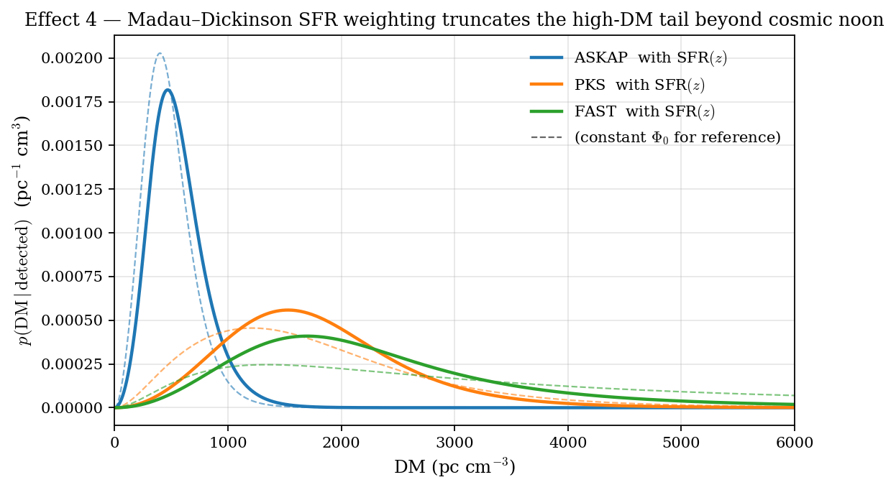
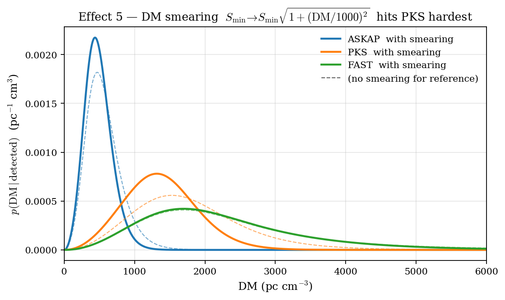
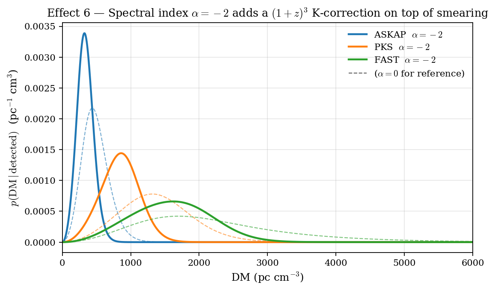

We build a deliberately minimal model of the cosmological FRB population, adding one effect at a time, to expose how each reshapes the detected dispersion-measure (DM) distribution. The five dominant astrophysical effects are (1) Euclidean geometry, (2) the luminosity function, (3) cosmology, (4) the cosmic star-formation history, and (6) the intrinsic spectral index; we also include (5) intra-channel DM smearing, the dominant instrumental effect on FRB sensitivity at high DM. Three reference single-dish telescopes are used throughout, calibrated such that ASKAP would just detect a median FRB to $\dm = 1000$ in the bare Euclidean limit and then made four times fainter in the population. The six sweeps demonstrate how the survey moves between sensitivity-limited and volume-limited regimes, how SFR weighting truncates the high-DM tail of volume-limited surveys, how DM smearing disproportionately affects intermediate-aperture telescopes, and how a steep negative spectral index re-introduces sensitivity limits at every diameter.
We begin in the simplest possible limit: a uniform-density population of identical FRBs in flat, non-expanding space. With intrinsic width $w = 1\,\mathrm{ms}$ and spectral luminosity $\Lstar$, the observed flux density is $S = \Lstar / (4\pi d^2)$, so a telescope with detection threshold $\Smin$ has a hard horizon
where the radiometer equation $\Smin \propto D^{-2}$ gives the diameter scaling. The expected number of detections per unit distance grows as $dN/dr \propto r^2$ from the uniform density of the population, so the detected DM distribution (with $\dm \propto d$) is
Calibrating the ASKAP horizon to $\dm_{\max}^{\mathrm{ASKAP}} = 1000\pccm$ gives Parkes a horizon at $\dm_{\max}^{\mathrm{PKS}} = 5000$ and FAST at $\dm_{\max}^{\mathrm{FAST}} = 25{,}000$. The integrated event rate scales as $R \propto \Omega_{\rm FoV}\,d_{\max}^3 \propto D^{-2}\cdot D^3 = D$: linear in diameter, despite the $D^4$ collecting-area gain on volume.

FRB luminosities are not standard candles. We adopt a log-normal LF in the natural log of the spectral luminosity:
with median $\Lstar$ and natural-log width $\sigma$. The detection probability of a source at distance $d$ is the upper tail of the LF above the limiting luminosity at that distance,
The hard horizon is replaced by a smooth roll-off whose extent is controlled by $\sigma$. In particular, a wider LF (larger $\sigma$) lets intrinsically bright bursts be detected from well beyond the standard-candle horizon, and the high-DM tail of a sensitivity-limited survey directly probes $\sigma$.

Two changes follow from doing the geometry properly. First, the volume element is no longer Euclidean,
with comoving distance $D_C(z) = (c/H_0)\!\int_0^z dz'/E(z')$ and luminosity distance $D_L(z)=(1+z)D_C(z)$. Second, the spectral flux of a source at redshift $z$ acquires a $(1+z)$ factor: $S_\nu = (1+z)L_\nu/(4\pi D_L^2)$. With a flat spectrum (deferred to section 5), the limiting luminosity is
For the DM--redshift relation we adopt the linear simplification of the Macquart relation, $\dm = 1000\,z$. The detected-rate density per unit observer time per unit DM is then the master expression
where $\Phi(z)$ is the comoving FRB rate density (set to a constant $\Phi_0$ in this section) and the $1/(1+z)$ factor is the cosmological time dilation of the rate. We henceforth plot the area-normalised conditional PDF $p(\dm \mid \mathrm{detected})$, since $\Omega_{\rm FoV}$ is independent of DM and cancels in the shape.

| Telescope | $Q_{25}$ | $Q_{50}$ | $Q_{75}$ | $Q_{90}$ |
|---|---|---|---|---|
| ASKAP | 323 | 449 | 600 | 765 |
| PKS | 1020 | 1581 | 2315 | 3178 |
| FAST | 1507 | 2656 | 4401 | 6152 |
If FRBs track star formation without delay, the comoving rate density is no longer constant but follows the Madau--Dickinson (2014) parametrisation
The weight $\psi(z)/\psi(0)$ rises from $1$ at $z=0$ to $\approx 8.9$ at cosmic noon ($z\simeq 1.9$), then declines to $\approx 2.1$ by $z=5$. Inserted into the master expression for $d\dot N / d\dm$, this preferentially up-weights $z\sim 1$–$3$ and down-weights both very low and very high redshifts.

| Telescope | Mode | $Q_{25}$ | $Q_{50}$ | $Q_{75}$ | $Q_{90}$ |
|---|---|---|---|---|---|
| ASKAP | const $\Phi_0$ | 323 | 449 | 600 | 765 |
| ASKAP | SFR$(z)$ | 388 | 529 | 699 | 888 |
| PKS | const $\Phi_0$ | 1020 | 1581 | 2315 | 3178 |
| PKS | SFR$(z)$ | 1228 | 1687 | 2228 | 2827 |
| FAST | const $\Phi_0$ | 1507 | 2656 | 4401 | 6152 |
| FAST | SFR$(z)$ | 1453 | 2079 | 2941 | 4074 |
A pulse of dispersion measure $\dm$ traversing a finite frequency channel of width $\Delta\nu_{\rm ch}$ is broadened in time by an amount proportional to $\dm$. Adding this broadening in quadrature with the intrinsic pulse width gives an effective matched-filter width $w_{\rm eff} = \sqrt{w^2 + t_{\rm DM}^2}$, and the radiometer equation gives a detection threshold
where the normalisation has been chosen so that the smearing time equals the intrinsic 1\,ms width at $\dm = 1000\pccm$. The same factor multiplies $\Smin$ for every telescope — smearing is set by channel width, not dish size — and so the limiting luminosity becomes

| Telescope | Mode | $Q_{25}$ | $Q_{50}$ | $Q_{75}$ | $Q_{90}$ |
|---|---|---|---|---|---|
| ASKAP | no smearing | 388 | 529 | 699 | 888 |
| ASKAP | with smearing | 352 | 471 | 605 | 743 |
| PKS | no smearing | 1228 | 1687 | 2228 | 2827 |
| PKS | with smearing | 1016 | 1354 | 1711 | 2060 |
| FAST | no smearing | 1453 | 2079 | 2941 | 4074 |
| FAST | with smearing | 1436 | 2042 | 2846 | 3811 |
Real FRBs are not flat-spectrum. With $S_\nu \propto \nu^{\alpha}$ (so $\alpha < 0$ means fainter at higher frequencies), an FRB observed at $\nu_o$ is emitted at $\nu_e = (1+z)\nu_o$ with rest-frame spectral luminosity $L_{\nu_e} = L_{\nu_o}\,(1+z)^{\alpha}$. The K-correction modifies the limiting luminosity, now stacking on top of the smearing factor of section 5, to
For $\alpha = 0$ we recover the previous $(1+z)^1$ scaling. For $\alpha = -2$, the K-correction factor is $(1+z)^{3}$, giving a $9\times$ harder detection threshold at $z = 2$ and a $25\times$ harder threshold at $z = 4$. This effectively re-introduces sensitivity-limited behaviour even at FAST.

| Telescope | $\alpha$ | $Q_{25}$ | $Q_{50}$ | $Q_{75}$ | $Q_{90}$ |
|---|---|---|---|---|---|
| ASKAP | $0$ | 352 | 471 | 605 | 743 |
| ASKAP | $-2$ | 254 | 332 | 414 | 494 |
| PKS | $0$ | 1016 | 1354 | 1711 | 2060 |
| PKS | $-2$ | 656 | 847 | 1032 | 1199 |
| FAST | $0$ | 1436 | 2042 | 2846 | 3811 |
| FAST | $-2$ | 1184 | 1591 | 1991 | 2339 |
The six effects act on the detected DM distribution in distinct and partially complementary ways:
The model is deliberately minimal. The largest remaining omissions are (i) intrinsic Macquart-relation scatter from host- and IGM-DM contributions; (ii) scatter-broadening from inhomogeneous plasma ($\propto \dm^{2}$ to $\dm^{4}$ depending on screen geometry); (iii) a delay-time distribution for FRB progenitors not strictly tracking star formation; (iv) effective receiver multiplicities (PAFs on ASKAP, multibeam on FAST) that change $\Omega_{\rm FoV}$ for real surveys; and (v) a distribution over $\alpha$ rather than a single value. None of these change the qualitative conclusions above; all of them would smear the curves further.
frb_doc_figures.py,
frb_dndm_shapes.py, frb_dndm_sfr.py,
frb_dndm_smear.py, and frb_dndm_alpha.py
in /Users/mbailes. Cosmology assumed: flat $\Lambda$CDM with
$H_0 = 67.4\,\mathrm{km\,s^{-1}\,Mpc^{-1}}$, $\Omega_m = 0.315$.